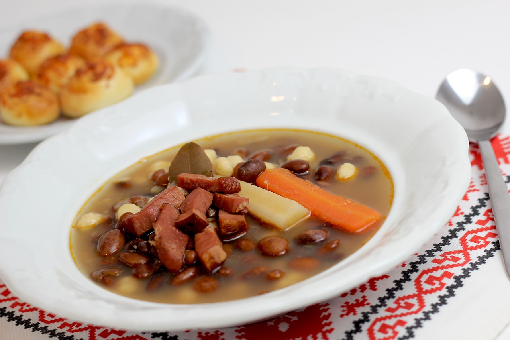

Pottage of Peas and Bacon

This roast capon, flavored with a blend of ginger, cloves, and black pepper, reflects the medieval love of spiced meats.
The combination of vinegar and honey forms a rich glaze that caramelizes as the bird roasts, creating a balance of sweet, savory, and tangy flavors.
Capon was a prized bird, often served at feasts and special occasions.
Ingredients
- 2 cups dried peas
- 4 strips of bacon, chopped
- 1 onion, chopped
- 1 tsp fresh thyme
- 1 bay leaf
- Salt and pepper to taste
Steps
- Soak the dried peas overnight, then drain.
- In a pot, fry the bacon until crispy. Remove and set aside.
- In the same pot, sauté the chopped onion in the bacon fat until soft.
- Add the peas, thyme, bay leaf, and enough water to cover the peas. Simmer for 1 to 2 hours until peas are tender.
- Season with salt and pepper, stir in the bacon, and serve.